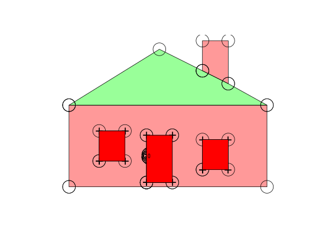

Decompose a Spatial or sf object to a single table structured as a row for every coordinate in all the sub-geometries, including duplicated coordinates that close polygonal rings, close lines and shared vertices between objects.
# S3 method for SpatialPolygons sptable(x, ...) # S3 method for SpatialLines sptable(x, ...) # S3 method for SpatialPointsDataFrame sptable(x, ...) # S3 method for SpatialMultiPointsDataFrame sptable(x, ...) sptable(object) <- value sptable(x, ...) # S3 method for trip map_table(x, ...)
Spatial objectSpatial object
tibble with columns
Input can be a of type sf SpatialPolygonsDataFrame, SpatialLinesDataFrame, SpatialMultiPointsDataFrame or a SpatialPointsDataFrame.
For simplicity sptable and its inverses sp and sf assume that all geometry can be encoded with object, branch, island, order, x and y.
and that the type of topology is identified by which of these are present.
For simple features objects with mixed types of topology the result is consistent, but probabably not useful. Columns that aren't present in one type will be present, padded with NA. (This is work in progress).
This is analogous to the following but in spbabel provides a consistent way to round-trip back to Spatial classes and other forms.
sp_tidiers (replacement of 'ggplot2::fortify').
geom
SpatialPolygonsDataFrame-class with its 'as(as(x, "SpatialLinesDataFrame"), "SpatialPointsDataFrame")' work flow.
## holey is a decomposed SpatialPolygonsDataFrame spdata <- sp(holey) library(sp) plot(spdata, col = rainbow(nrow(spdata), alpha = 0.4))points(holey$x_, holey$y_, cex = 4)holes <- subset(holey, !island_) ## add the points that only belong to holes points(holes$x_, holes$y_, pch = "+", cex = 2)## manipulate based on topology ## convert to not-holes notahole <- holes notahole$island_ <- TRUE #also convert to singular objects - note that this now means we have an overlapping pair of polys #because the door had a hole filled by another object notahole$object_ <- notahole$branch_ plot(sp(notahole), add = TRUE, col = "red")## example using in-place modification with sptable<- library(maptools)#>data(wrld_simpl) spdata2 <- spdata library(dplyr) ## modify the geometry on this object without separating the vertices from the objects sptable(spdata2) <- sptable(spdata2) %>% mutate(x_ = x_ + 10, y_ = y_ + 5)